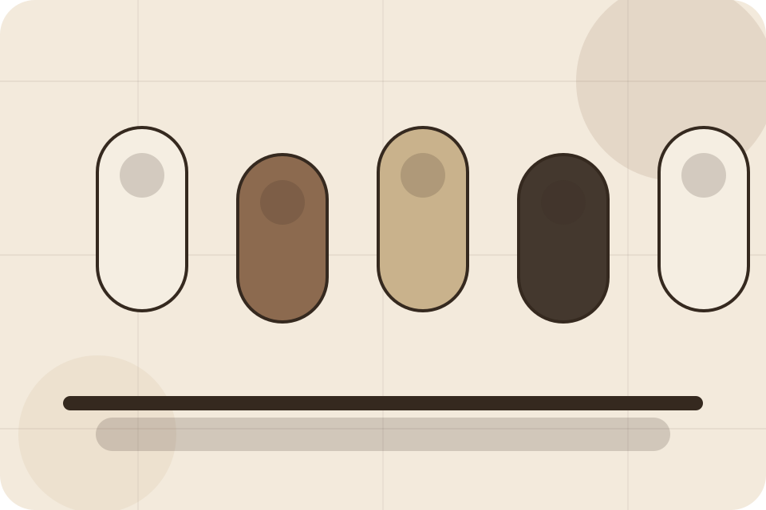
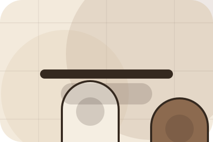
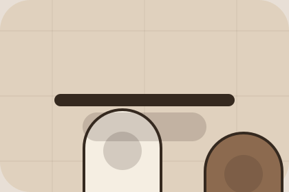

Results / 01
Results by Skin
Results shaped for beauty, cosmetics & aesthetic products decisions.
Results opens as a clear beauty decision hub: what Skin offers, who it helps, why it matters, and which route to take first.
The first screen combines positioning, proof, primary action, and fast internal navigation, so people can act immediately or compare the rest of the results route with context.
Browse quicklyCompare clearlyAsk availability
Muted product education hero
Build a routine
Select the closest route and Skin keeps the next step, proof, and follow-up expectation aligned with self-care confidence.

Results / 02
Before
Before shows what changes after the work: clearer decisions, visible progress, and proof points that connect the offer to real outcomes.
The layout connects before-and-after thinking with measured outcomes, making the result easy to scan without promising what the business cannot guarantee.
Explore ResultsBefore
The uncertainty, delay, or missed opportunity visitors bring into before.
After
The clearer, safer, or more valuable state Skin is designed to support.
Proof
The visible cue that connects before to a believable decision, not a loose claim.
Results / 03
Reviews
Reviews shows what changes after the work: clearer decisions, visible progress, and proof points that connect the offer to real outcomes.
The layout connects before-and-after thinking with measured outcomes, making the result easy to scan without promising what the business cannot guarantee.
Explore Results- 01
Before
The uncertainty, delay, or missed opportunity visitors bring into reviews.
- 02
After
The clearer, safer, or more valuable state Skin is designed to support.
- 03
Proof
The visible cue that connects reviews to a believable decision, not a loose claim.
Results / 04
Testimonials
Testimonials shows what changes after the work: clearer decisions, visible progress, and proof points that connect the offer to real outcomes.
The layout connects before-and-after thinking with measured outcomes, making the result easy to scan without promising what the business cannot guarantee.
Explore ResultsSkin structures testimonials around before, after, and a clear next route so visitors can compare the block quickly before they build a routine.
Build RoutineResults / 06
Timeframes
Timeframes shows what changes after the work: clearer decisions, visible progress, and proof points that connect the offer to real outcomes.
The layout connects before-and-after thinking with measured outcomes, making the result easy to scan without promising what the business cannot guarantee.
Explore ResultsBefore
The uncertainty, delay, or missed opportunity visitors bring into timeframes.
After
The clearer, safer, or more valuable state Skin is designed to support.

Proof
The visible cue that connects timeframes to a believable decision, not a loose claim.
Results / 07
Disclaimer
Disclaimer shows what changes after the work: clearer decisions, visible progress, and proof points that connect the offer to real outcomes.
The layout connects before-and-after thinking with measured outcomes, making the result easy to scan without promising what the business cannot guarantee.
Explore ResultsThe uncertainty, delay, or missed opportunity visitors bring into disclaimer.
The clearer, safer, or more valuable state Skin is designed to support.
The visible cue that connects disclaimer to a believable decision, not a loose claim.
Results / 08
Proof
Proof shows what changes after the work: clearer decisions, visible progress, and proof points that connect the offer to real outcomes.
The layout connects before-and-after thinking with measured outcomes, making the result easy to scan without promising what the business cannot guarantee.
Explore ResultsThe uncertainty, delay, or missed opportunity visitors bring into proof.
The clearer, safer, or more valuable state Skin is designed to support.
The visible cue that connects proof to a believable decision, not a loose claim.
Results / 09
Shop
Shop shows what changes after the work: clearer decisions, visible progress, and proof points that connect the offer to real outcomes.
The layout connects before-and-after thinking with measured outcomes, making the result easy to scan without promising what the business cannot guarantee.
Explore ResultsSkin structures shop around before, after, and a clear next route so visitors can compare the block quickly before they build a routine.
Build RoutineResults / 10
Build Routine
Skin closes the results route with a clear action, a quick reminder of the value, and a low-friction way to build a routine.
Visitors who are ready can use the primary action. Visitors who are still comparing can scan the section links, proof, and support routes before they build a routine.
Build RoutineThe final block keeps the choice simple: act now, compare one more proof route, or send enough detail for a focused response.
Build Routineself-care confidence
Build Routine
A routine site with restrained product education, ingredient notes, tactile cards, and consultation routes. Results ends with a direct path to build a routine, plus enough context for visitors who still need to compare.

Build RoutineNotes
Ingredient suitability varies by person; patch testing and professional advice may be needed for sensitive users.